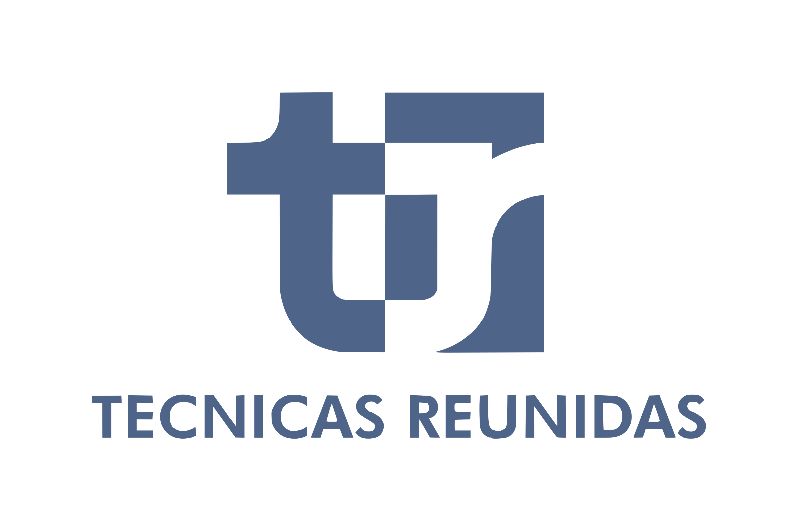
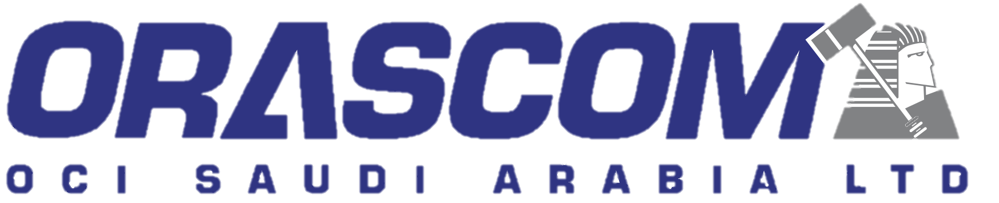
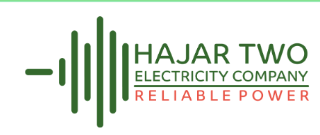

HSE INITIATIVE · 70330 HAJR EXPANSION PROJECT
Safety Climate Survey
Your voice helps us strengthen health and safety management across the project. The survey is anonymous and available in 11 languages.
SCAN TO PARTICIPATEsafety-climate-survey.netlify.app
How to complete the survey
1
Scan QR CodeOpen the survey using your phone camera.2
Select LanguageChoose your preferred language, including Filipino / Tagalog.3
Select RoleChoose the questionnaire that matches your role.4
Select DivisionSelect your division and work area where applicable.5
Answer QuestionsRate each statement and add comments or voice-to-text.6
SubmitComplete the required questions and submit your response.11LANGUAGES
4QUESTIONNAIRES
8SAFETY FACTORS
100%ANONYMOUS